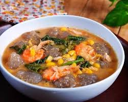

K A P U R U N G

Kapurung merupakan makanan yang mirip dengan papeda yakni terbuat dari
bahan dasar sagu. Namun kapurung di Sulawesi memiliki rasa yang lebih
menggoda karena dimasak dengan berbagai macam sayuran dan daging. Kuah
dari kapurung juga terlihat seperti kuah gulai sehingga semakin memikat
mata.
Dari tampilannya, kapurung memang begitu mirip dengan soto namun jika
dirasakan akan terasa sekali lembutnya papeda yang dikombinasi dengan
segarnya kuah dari berbagai macam sayur dan daging yang diberi berbagai
macam bumbu.
Berikut ini bahan-bahan dan cara pembuatannya:
-
- 100 gram udang ukuran 13-16
- 200 gram ikan kembung (atau ikan tongkol) atau ikan teri mirong,
boleh ganti ikan
- 200 gram tepung sagu ( sagu segar asli langsung ambil dari pohon sagu,
jika tidak ada bisa gunakan tepung kanji atau sagu tani banyak tersedia
di supermarket)
- 8 mata asam patikala (buah kecombrang digeprek) bisa ganti air asam
jawa dan ditambah potongan tangkai bunga kecombrang yang masih lunak
-
- Kangkung
- Kacang panjang
- Jagung manis muda
- Bayam
- Terong
- Jantung pisang dan tomat buah. Bersihkan, lalu potong-potong
-
- 4 sdm kacang tanah goreng
- 1/2 sdt terasi
- 3 buah cabe merah
- 1 sdm garam
- Penyedap rasa
- 2 butir bawang merah
- 1 buah tomat merah
-
- 1 buah tomat
- 10 cabe rawit merah
- 1/4 sdt garam
- 1/2 sdt gula pasir putih
- 1 buah jeruk limau
-
- Rebus ikan sampai hancur dalam 1,5 liter air. Selain itu, daging ikan
juga bisa diblender dan diaduk rata menjadi kaldu ikan yang tebal.
- Masukkan semua bumbu ke dalam kaldu ikan.
- Masukkan sayur-mayur dan udang ke dalam kuah.
- Tepung sagu dicampur dengan sedikit air, lalu disiram air panas sampai
warnanya berubah menjadi abu-abu. Bentuk sagu menjadi bola-bola sebesar bakso.
Bola-bola sagu ini nantinya dimasukkan ke dalam kuah Kapurung
- Hidangkan Kapurung dalam kondisi masih panas. Bila dingin tampilan
dan rasanya akan berubah.
-
- Semua bahan ditumbuk atau diulek hingga halus.
- Jeruk limau dipotong menjadi dua dan diperaskan airnya kedalam sambal
pedas.
- Sambal Kapurung siap disajikan bersama sayur kapurung.
Kembali Ke Atas